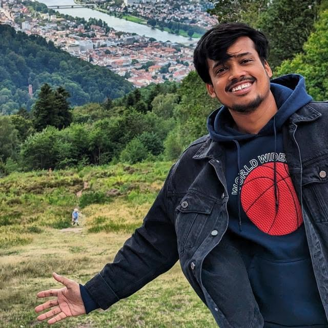

Hello, I'm Hardik Ravindra Sakpal
I'm an AI engineer who builds AI agents and deep learning models that turn manual, broken processes into automated systems: a production-ready LangGraph agent that optimizes process settings on its own, a RAG assistant on a locally hosted LLM, and neural networks for detection and prediction.

Example run, for illustration.
My production agent at work: at every step it decides which tool to call next, saves its state so it survives a restart, and serves several users at once, entirely on local infrastructure.
I'm an AI engineer focused on AI agents and deep learning, with an M.Sc. in Computational Sciences in Engineering from TU Braunschweig. I design agents that choose and run tools on their own, and I build neural networks, CNNs and computer-vision models for detection and prediction in industrial processes.
I benchmark models before choosing them and validate results on unseen data. I built a RAG assistant on a locally hosted LLM and, on my own initiative, a multi-user, restart-safe, fully local AI agent with 8 tools that optimizes process settings automatically.
Alongside this, I'm exploring AI safety. I'm currently working on an AI evaluation project focused on hallucinations: testing how and when LLMs produce confident but unsupported answers, and how to measure it reliably.
I'm hands-on in Python, SQL, FastAPI, Docker, Kubernetes and CI/CD.
Machine Learning with Neural Networks, Pattern Recognition, Scientific Machine Learning, Data-Driven Material Modeling, Numerical Methods for ODEs/PDEs, Advanced Computerlab Data Science
Advanced Data Science Lab, DLR Institute of Lightweight Systems & TU Braunschweig.
Open to good conversations
hardiksakpal97@outlook.com
Download resume